ROSES OS · A Consciousness & Remembrance Ecosystem
ROSES OS · Manual Visual para Profesores
Prácticas Fundamentales — Todos los Niveles
Teachings by Angelina Ataíde
Escola da Aura
2026 · REVIEW EDITION
Manual Visual para Profesores
Manual Visual para Profesores
Prácticas Fundamentales — Todos los Niveles
Acuerdos y Virtudes
3
Nivel 1: Fundamento — Prácticas Fundamentales
4
Nivel 2: Profundización — Energético y Relacional
13
Nivel 3: Enseñanza — Transmisión y Facilitación
22
Un compañero visual del facilitador para la enseñanza de la Meditación de la Rosa.
Manual Visual para Profesores · Todos los Niveles
Acuerdos y Virtudes
Acuerdos y Virtudes
Antes de comenzar, todos los participantes honran estos acuerdos:
Puntualidad, Confidencialidad, Corresponsabilidad, Confianza, Paciencia, Empatía y Compasión.
Es Importante Saber
Recibirá el manual en PDF.
Estas enseñanzas forman parte de un linaje energético vivo, revelado a través de la práctica directa y la transmisión.
No debe intentar enseñar la Meditación de la Rosa (solo a sus hijos menores de 14 años).
Si desea convertirse en Facilitador de Meditación de la Rosa, es necesario seguir un camino de formación a través de la Lectura del Aura.
La Meditación de la Rosa no puede ser aplicada a otras personas.
Historia y Linaje
La Lectura del Aura surgió en la década de 1960, en California, canalizada por un norteamericano llamado Lewis S. Bostwick. Fundador del Berkeley Psychic Institute y de la Church of the Divine Man, canalizó y sistematizó las técnicas y herramientas enviadas por los ángeles, para asistir en el proceso de evolución de la humanidad.
Linaje: Berkeley Psychic Institute → Anastasia Plunk → Angelina Ataide → ROSES OS
3
Nivel 1
Prácticas Fundamentales
Diapositivas 1–18
4
1
La Rosa
La Rosa es el símbolo y la herramienta fundamental de esta práctica — un instrumento energético vivo utilizado en todos los niveles del trabajo.
2
Postura de Meditación
La postura correcta de meditación es sentada erguida en una silla. Los pies están apoyados en el suelo, las manos descansando suavemente sobre los muslos o las rodillas, la columna erguida, los ojos cerrados. El cuerpo está relajado pero alerta — enraizado y receptivo.
3
Cordón de Enraizamiento
El cordón de enraizamiento es una conexión energética que se extiende desde la base de la columna (primer chakra) hacia abajo hasta el centro de la Tierra. Ancla su cuerpo energético al planeta, proporcionando estabilidad, seguridad y un canal para liberar energía no deseada.
4
Sol Dorado
El Sol Dorado es una herramienta para reabastecer y restaurar su propia energía. Visualice un sol dorado radiante sobre su cabeza. Llama de vuelta su propia energía vital de dondequiera que la haya dejado — en personas, lugares, situaciones o en el tiempo. Lo llena con su vibración más elevada.
5
5
Un Ejercicio para Sentir Su Aura
El aura es el campo energético que rodea su cuerpo físico. Este ejercicio le ayuda a tomar conciencia de su presencia, sus bordes y su calidad. El aura consiste en múltiples capas que irradian hacia afuera del cuerpo.
6
Expansión del Cordón de Enraizamiento
Una vez que usted es consciente de su aura, la práctica del cordón de enraizamiento se profundiza. Usted enraíza no solo el cuerpo físico, sino también el aura misma — permitiendo que todo el campo energético se ancle en la Tierra.
7
El Sol Dorado Lo Llena
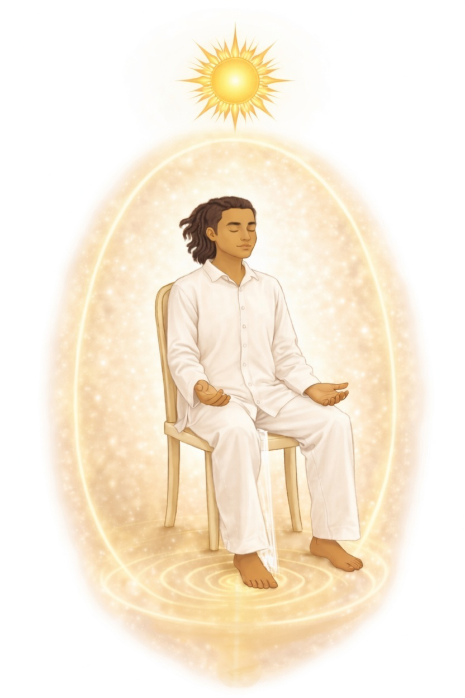
El Sol Dorado sobre la corona derrama luz dorada hacia abajo, llenando toda el aura y el cuerpo con su vibración más elevada. Esto completa la arquitectura energética completa: postura, aura, cordón de enraizamiento y sol dorado — todos activos juntos.
8
Circuito de la Energía de la Tierra
El circuito de la Tierra es un camino energético que atrae la energía de la Tierra hacia arriba a través de los pies, subiendo por las piernas y entrando al cuerpo. Este circuito lo conecta con la fuerza enraizadora, nutritiva y estabilizadora del planeta.
6
9
Circuito de la Energía del Cosmos
El circuito Cósmico es un camino energético que atrae la energía cósmica hacia abajo a través de la corona de la cabeza (7º chakra) y hacia el interior del cuerpo. Este circuito lo conecta con las
10
Circuito de la Energía del Cosmos y de la Tierra
Cuando ambos circuitos se activan simultáneamente, las energías de la Tierra y del Cosmos fluyen juntas a través del cuerpo. La energía de la Tierra asciende desde abajo; la energía Cósmica desciende desde arriba. Se encuentran y se mezclan dentro del cuerpo, creando un campo unificado de energía equilibrada e integrada.
11
La Rosa (como Herramienta Energética)
La Rosa se utiliza como un instrumento energético vivo a lo largo de toda la práctica. Tiene raíces (conexión con la fuente), un tallo (canal de energía) y una flor (la herramienta activa y
12
Rosas de Protección, Observación y Separación
Las Rosas se colocan en los bordes del aura para servir como centinelas energéticos. Cumplen tres funciones:
1. Protección — Definen y protegen los límites de su aura
2. Observación — Le ayudan a percibir qué energías se acercan o interactúan con su campo
3. Separación — Crean una distinción energética saludable entre su energía y la energía de los demás Three functions: Protection (guard the boundary), Observation (notice approaching energies), Separation (healthy energetic distinction).
7
13
Rosa de Limpieza
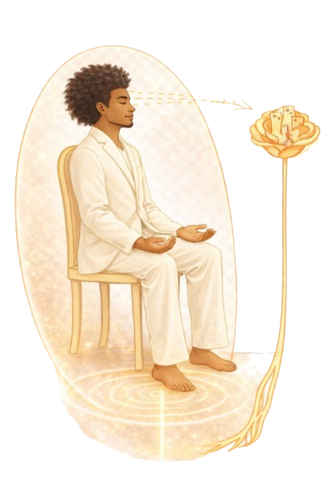
La Rosa de Limpieza se coloca fuera del aura. Se utiliza para absorber y transmutar energía ajena o estancada de su campo. La energía que no le pertenece — de otras personas, ambientes o experiencias
14
Recuperación Energética de Cada Chakra
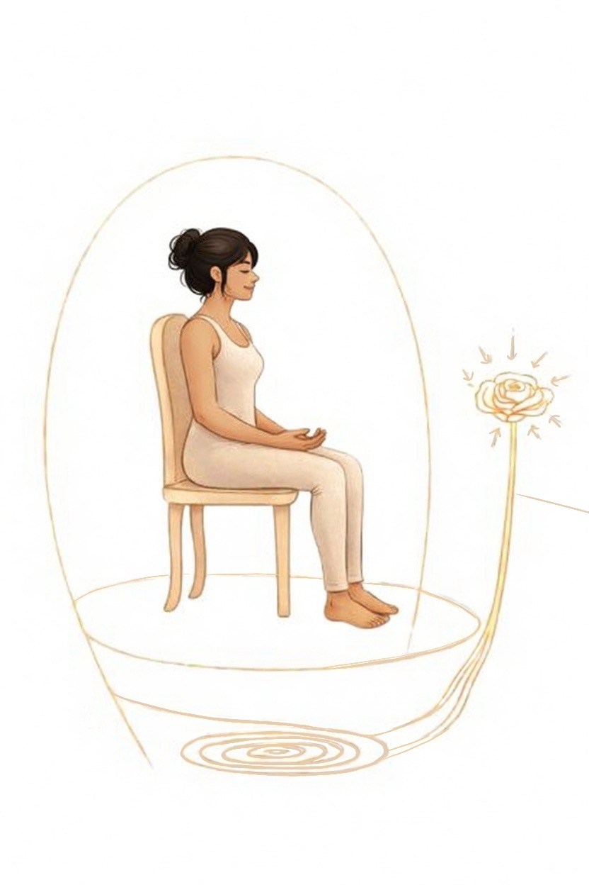
Después de la limpieza, la Rosa se utiliza para recuperar su propia energía que ha sido dejada o tomada por otros. La Rosa es enviada como un instrumento para reunir y devolver su propia energía vital a cada chakra, restaurando plenitud y soberanía a cada centro energético. The Rose gathers and returns your life-force energy to each chakra, restoring fullness and sovereignty.
15
Pink Rose Closure
The Pink Rose Closure is offered at the end of the meditation as a gift of well-being. Create an unrooted pink Rose and place yourself or the person inside it, visualizing “Happy, Healthy, Whole, Body, Mind & Soul.”
16
Descarga del Exceso de Energía
Después de una meditación profunda o trabajo energético, el exceso de energía puede acumularse en el cuerpo. Para descargarlo, inclínese hacia adelante desde la posición sentada
8
17
Creemos Su Espacio Sagrado
El Nivel 2 comienza con la creación de su propio espacio sagrado — un entorno energético interno que sirve como su hogar de meditación. Este es el espacio desde el cual se conduce
18
El 6º y el 7º Chakras (Espacio Sagrado)
Comprender las ubicaciones y funciones de los chakras superiores es esencial para el trabajo del Nivel 2: • 6º Chakra (Tercer Ojo) — Ubicado en el centro de la frente, entre y
Nivel 1
18 Diapositivas
Las prácticas esenciales que forman la base de todo el trabajo de ROSES OS. Respiración, cuerpo, corazón y la Meditación de la Rosa.
9
8
Circuito de la Energía de la Tierra
El circuito de la Tierra es un camino energético que atrae la energía de la Tierra hacia arriba a través de los pies, subiendo por las piernas y entrando al cuerpo. Este circuito lo conecta con la fuerza enraizadora, nutritiva y estabilizadora del planeta.
9
Circuito de la Energía del Cosmos
The Cosmic circuit draws cosmic energy downward through the crown of the head (7th chakra) and into the body. This connects you to the higher frequencies of universal consciousness, inspiration, and spiritual guidance.
10
10
Circuito de la Energía del Cosmos y de la Tierra
Cuando ambos circuitos se activan simultáneamente, las energías de la Tierra y del Cosmos fluyen juntas a través del cuerpo. La energía de la Tierra asciende desde abajo; la energía Cósmica desciende desde arriba. Se encuentran y se mezclan dentro del cuerpo, creando un campo unificado de energía equilibrada e integrada.
15
Pink Rose Closure
The Pink Rose Closure is offered at the end of the meditation as a gift of well-being. Create an unrooted pink Rose and place yourself or the person inside it, visualizing “Happy, Healthy, Whole, Body, Mind & Soul.”
11
17
Creemos Su Espacio Sagrado
El Nivel 2 comienza con la creación de su propio espacio sagrado — un entorno energético interno que sirve como su hogar de meditación. Este es el espacio desde el cual se conduce
18
El 6º y el 7º Chakras (Espacio Sagrado)
Understanding the locations and roles of the upper chakras: 6th Chakra (Third Eye) at the center of the forehead; 7th Chakra (Crown) at the top of the head.
Espacio Sagrado
12
Nivel 2
Energético y Relacional
Diapositivas 19–38
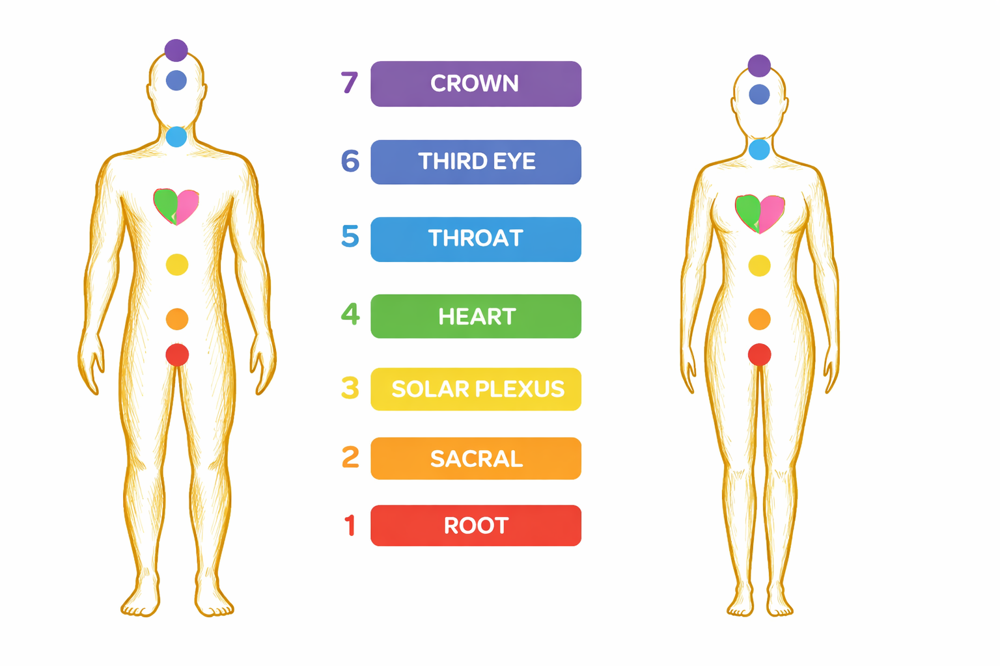
13
19
Preparemos Su Espacio Físico
Antes de la meditación, prepare su entorno físico para apoyar el trabajo energético. El espacio externo debe reflejar la intención interna: limpio, claro, silencioso y sostenido intencionalmente.
20
Protección del Espacio
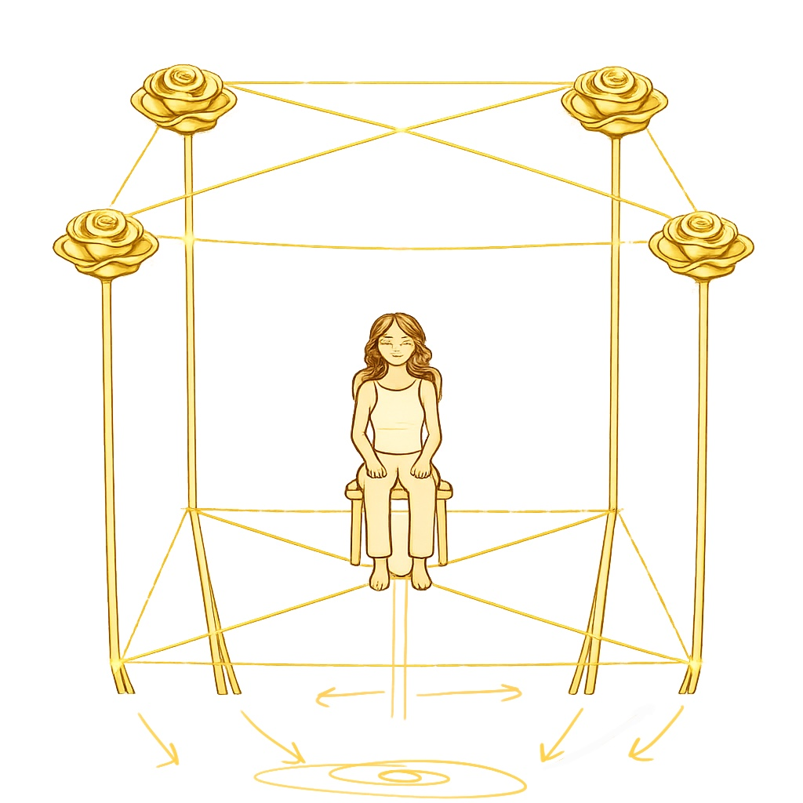
El espacio físico de meditación se protege creando una rejilla energética usando rosas. Rosas doradas se colocan en las cuatro esquinas (y arriba/abajo) del espacio, conectadas por líneas de energía dorada formando una estructura geométrica sagrada — un contenedor para el trabajo. Golden roses are placed at the four corners, connected by lines of golden energy forming a sacred geometric structure.
21
Limpieza del Espacio
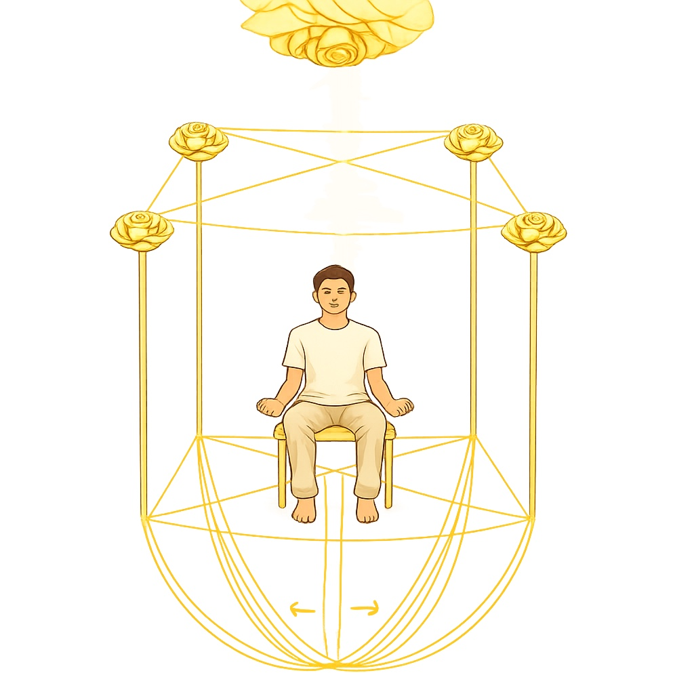
Una vez que el espacio está protegido, se limpia. Una gran Rosa de Limpieza se coloca encima de la rejilla, y la energía dorada fluye hacia abajo a través de toda la estructura, limpiando todas las energías ajenas, estancadas o perturbadoras del espacio. A large Cleansing Rose is placed above the grid, and golden energy pours downward through the entire structure, clearing all foreign energies.
22
Apropiarse de Su Espacio
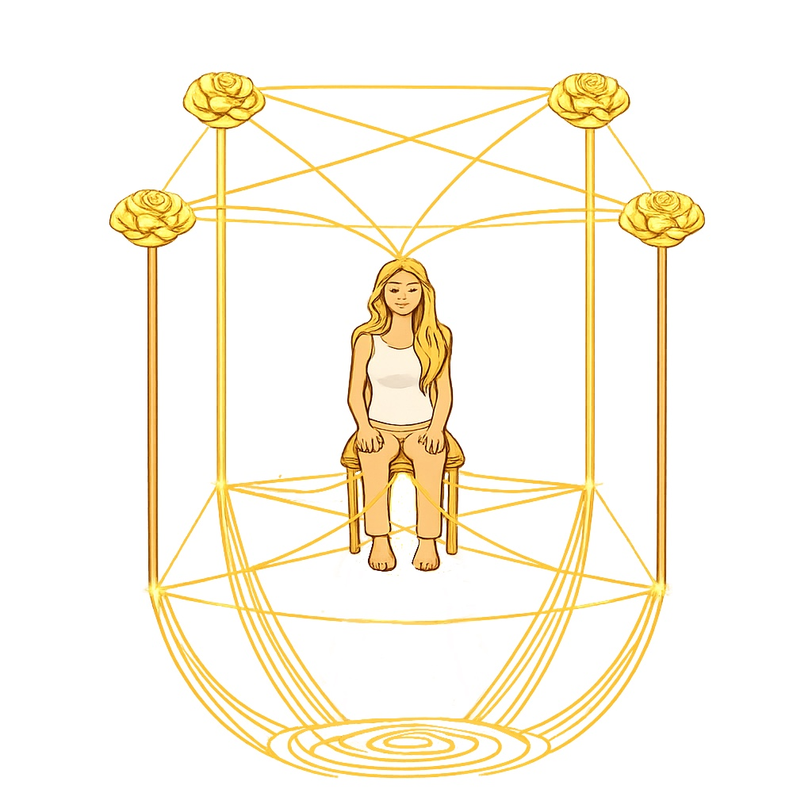
Después de la protección y la limpieza, usted toma posesión del espacio. Este es un acto de soberanía energética — declarando el espacio como suyo, llenándolo con su propia energía e intención. El espacio se convierte en una extensión de su aura y de su práctica. This is an act of energetic sovereignty — declaring the space as yours, filling it with your own energy and intention.
14
23
Hablemos de los Chakras
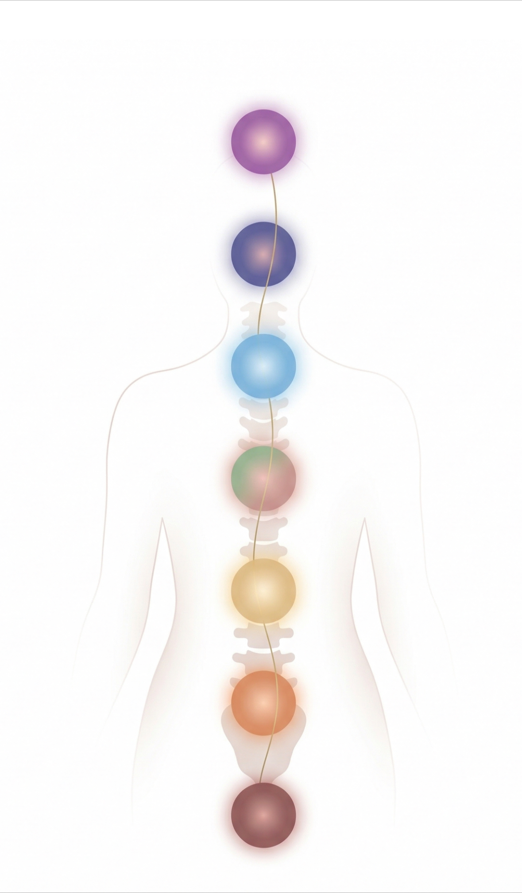
El sistema de chakras es la anatomía energética del cuerpo humano. Hay siete chakras primarios, cada uno gobernando aspectos específicos de la vida física, emocional, mental y espiritual.
24
Los Siete Chakras
7. Corona — Parte superior de la cabeza
6. Tercer Ojo — Centro de la frente
5. Garganta — Garganta
4. Corazón — Centro del pecho
3. Plexo Solar — Abdomen superior
2. Sacro — Abdomen inferior
1. Raíz — Base de la columna
15
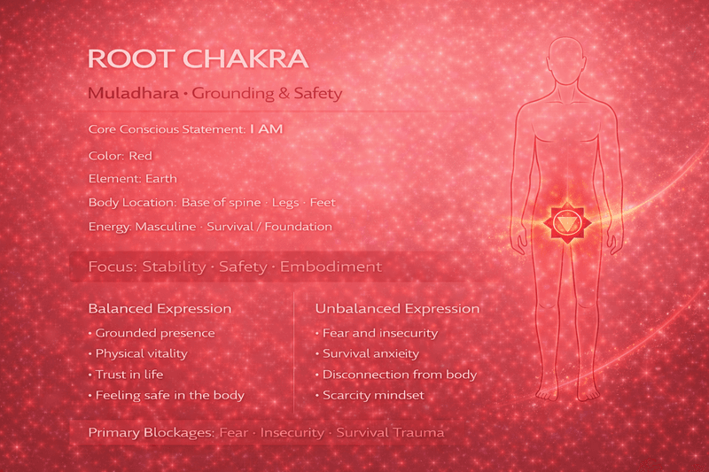
25
Chakra Raíz
Muladhara
Elemento: Earth · Statement:I AM
Enfoque: Estabilidad — Seguridad — Corporización
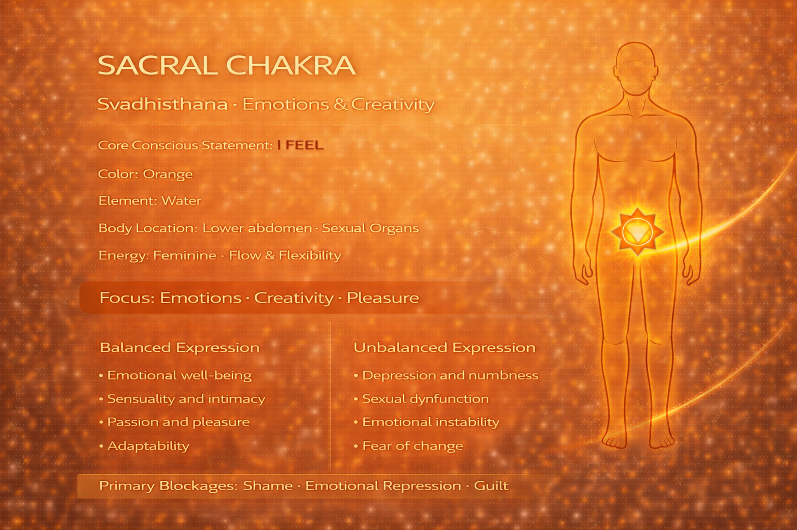
26
Chakra Sacro
Svadhisthana
Elemento: Water · Statement:I FEEL
Enfoque: Emociones — Creatividad — Placer
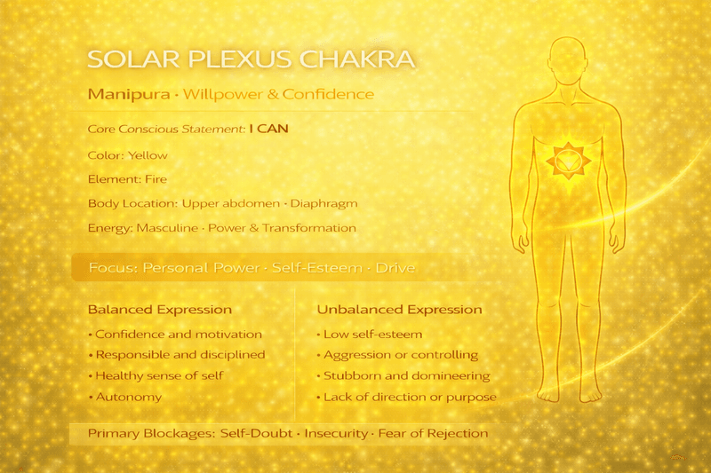
27
Chakra del Plexo Solar
Manipura
Elemento: Fire · Statement:I CAN
Enfoque: Poder Personal — Autoestima — Determinación
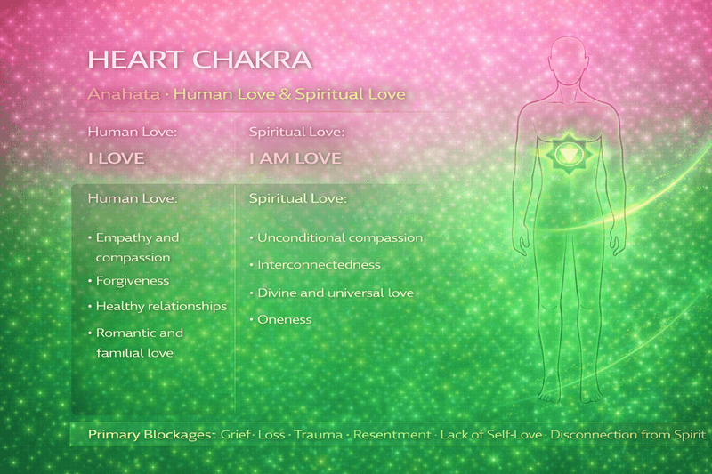
28
Chakra del Corazón
Anahata
Elemento: Air · Statement:I LOVE
Enfoque: Amor — Compasión — Conexión
16
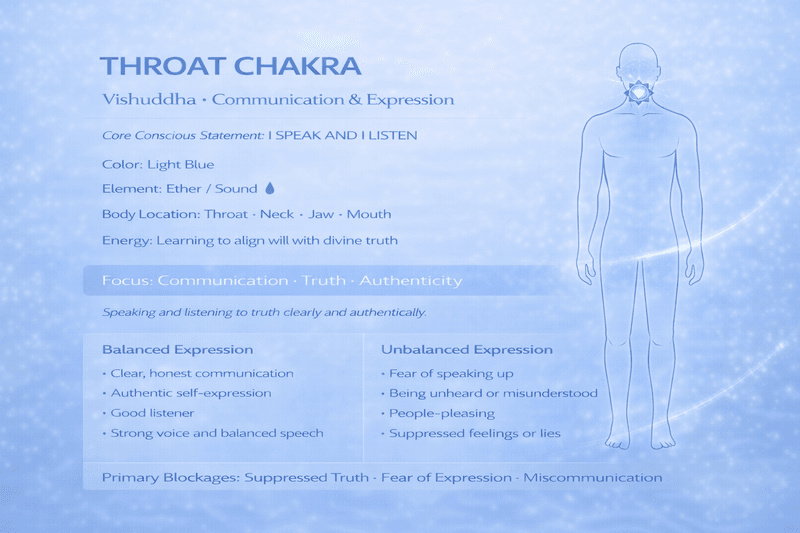
29
Chakra de la Garganta
Vishuddha
Elemento: Ether/Sound · Statement:I SPEAK AND I LISTEN
Enfoque: Comunicación — Verdad — Autenticidad
30
Chakra del Tercer Ojo
Ajna
Elemento: Light · Statement:I SEE
Enfoque: Imaginación — Percepción — Visualización
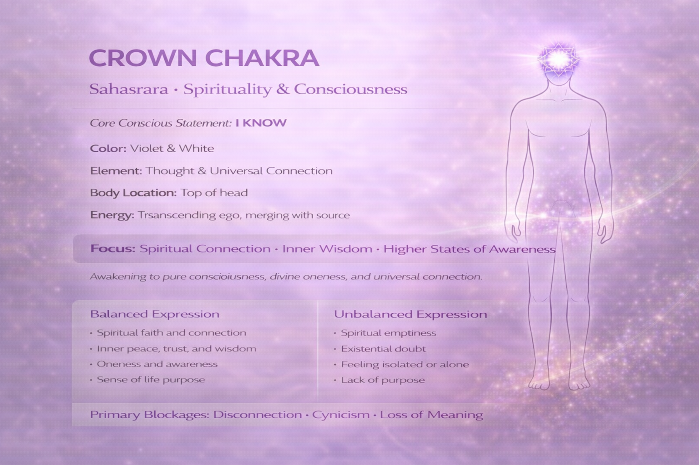
31
Chakra de la Corona
Sahasrara
Elemento: Thought · Statement:I KNOW
Enfoque: Conexión Espiritual — Sabiduría Interior — Estados Superiores de Conciencia
17
32
Limpieza de Cada Capa del Aura
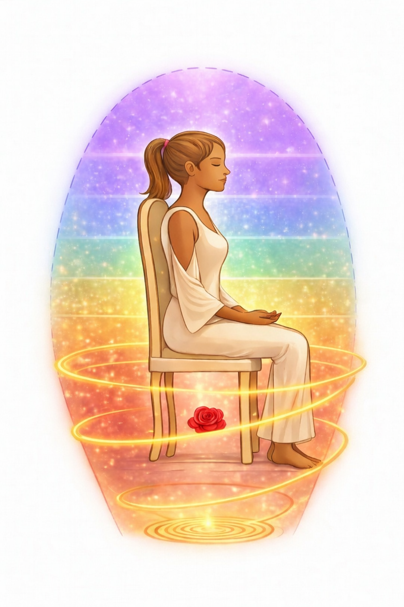
El aura se compone de siete capas, cada una correspondiente a un chakra. En el Nivel 2, cada capa se limpia individualmente desde la más externa hasta la más interna:
7. 7ª capa del Aura
6. 6ª capa del Aura
5. 5ª capa del Aura
4. 4ª capa del Aura
3. 3ª capa del Aura
2. 2ª capa del Aura
1. 1ª capa del Aura Each layer is individually cleansed.
33
Limpieza de Cada Chakra
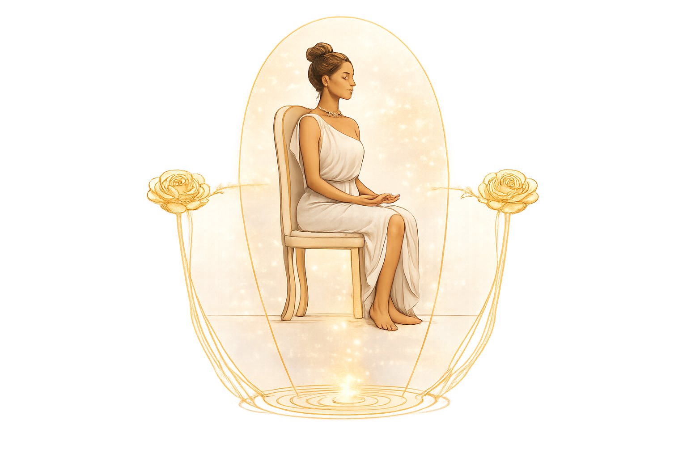
Cada chakra individual se limpia usando rosas. Las rosas abordan dos dimensiones: • Dinámicas del
34
Recuperación Energética de Cada Chakra
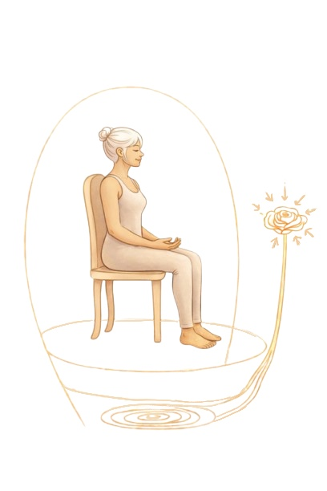
Después de la limpieza, el proceso de recuperación energética se repite a un nivel más profundo. La Rosa es enviada para reunir y devolver su propia energía a cada chakra individual, restaurando soberanía, vitalidad e integridad a cada centro energético.
35
Golden Sticky Roses — Phase 1
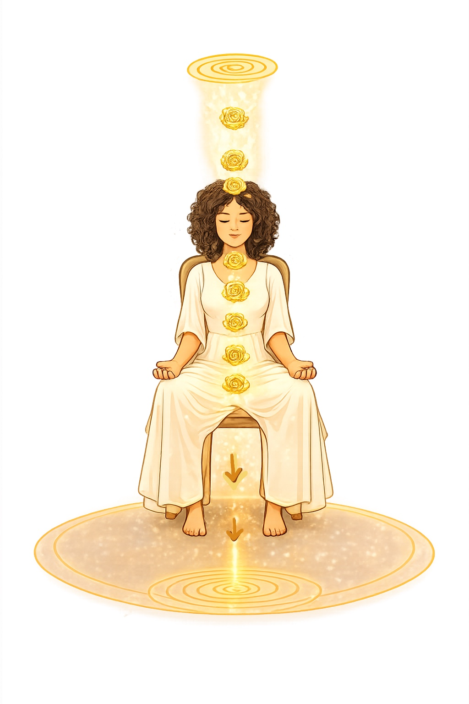
Las rosas doradas adhesivas se colocan en cada uno de los siete chakras,
18
36
Golden Sticky Roses — Phase 2
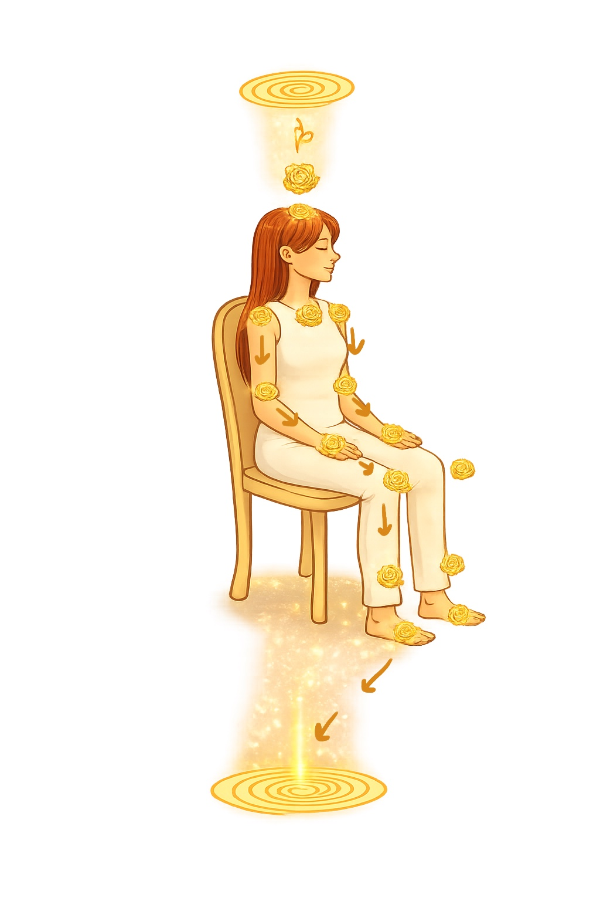
Las rosas doradas adhesivas se colocan en las articulaciones y extremidades del cuerpo — hombros,
37
Golden Sticky Roses — Phase 3
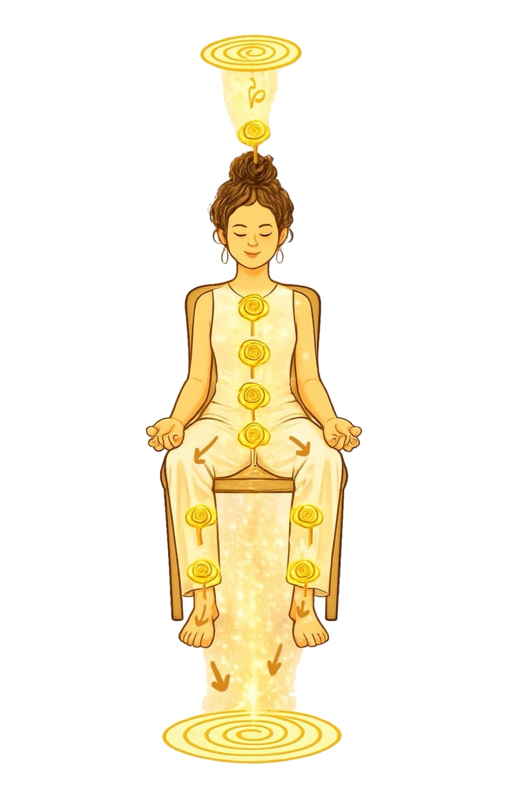
Las rosas doradas adhesivas se colocan por todo el cuerpo — cubriendo el torso,
38
Golden Sticky Roses — Phase 4
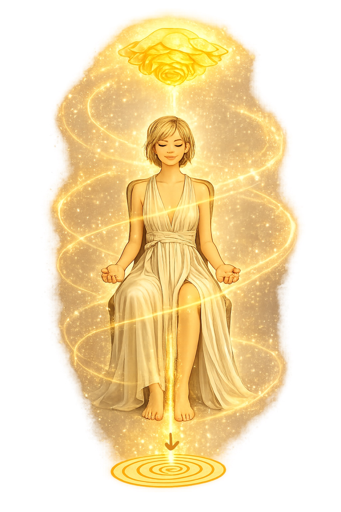
Después de que las rosas doradas adhesivas han realizado su trabajo, una gran Rosa Dorada aparece sobre la cabeza. Toda
Rosas Doradas Adhesivas
Nivel 2
20 Diapositivas
Prácticas avanzadas para la conciencia del cuerpo sutil, alquimia emocional y coherencia relacional.
19
19
Preparemos Su Espacio Físico
Antes de la meditación, prepare su entorno físico para apoyar el trabajo energético. El espacio externo debe reflejar la intención interna: limpio, claro, silencioso y sostenido intencionalmente.
20
Protección del Espacio
El espacio físico de meditación se protege creando una rejilla energética usando rosas. Rosas doradas se colocan en las cuatro esquinas (y arriba/abajo) del espacio, conectadas por líneas de energía dorada formando una estructura geométrica sagrada — un contenedor para el trabajo. Golden roses are placed at the four corners, connected by lines of golden energy forming a sacred geometric structure.
20
21
Limpieza del Espacio
Una vez que el espacio está protegido, se limpia. Una gran Rosa de Limpieza se coloca encima de la rejilla, y la energía dorada fluye hacia abajo a través de toda la estructura, limpiando todas las energías ajenas, estancadas o perturbadoras del espacio. A large Cleansing Rose is placed above the grid, and golden energy pours downward through the entire structure, clearing all foreign energies.
22
Apropiarse de Su Espacio
Después de la protección y la limpieza, usted toma posesión del espacio. Este es un acto de soberanía energética — declarando el espacio como suyo, llenándolo con su propia energía e intención. El espacio se convierte en una extensión de su aura y de su práctica. This is an act of energetic sovereignty — declaring the space as yours, filling it with your own energy and intention.
21
Nivel 3
Transmisión y Facilitación
Diapositivas 39–44
22
39
El Analizador
El Analizador es una herramienta avanzada introducida en el Nivel 3. Es un punto energético ubicado en la parte posterior de la cabeza, en la base del cráneo
40
El Analizador y el Espacio Sagrado
Una referencia combinada que muestra el Analizador en relación con el espacio sagrado. Esta imagen ilustra cómo el Analizador — el punto energético en la base del cráneo — opera dentro del contexto del espacio sagrado protegido y limpiado establecido en el Nivel 2. Los dos trabajan juntos: el espacio sagrado proporciona el contenedor, y el Analizador proporciona la herramienta perceptiva para una lectura y discernimiento energético más profundos. The sacred space provides the container, the Analyzer provides the perceptive tool.
41
Bastón de Acuerdos
Una relación solo puede manifestarse en el mundo material si está sostenida por un acuerdo espiritual. Tales acuerdos se forman con el consentimiento de ambas partes a nivel
42
Cortar Lazos Energéticos
Participamos en interacciones energéticas con los demás constantemente — cuando los vemos, los escuchamos, los tocamos, e incluso cuando pensamos en ellos. Cuando se forman lazos energéticos, nuestras auras se conectan a través de estos vínculos, permitiendo que la energía fluya entre nosotros. Por eso a menudo podemos percibir lo que les sucede a las personas cercanas, incluso a distancia.
Cuando las relaciones llegan a su fin, podemos vernos profundamente afectados por las energías que continúan llegándonos a través de estos vínculos. Por esta razón, es importante saber cómo cortarlos conscientemente:
• Cierre los ojos
• Visualice su aura con lazos saliendo de sus chakras
• Coloque su mano dominante sobre la 7ª vértebra cervical, ubicada en la unión del cuello y la espalda al nivel del 5º chakra
• Tenga la intención de que su mano tiene el poder de cortar todos los lazos
• Haga el movimiento de corte bajo su 1er chakra, colocando su mano sobre la silla donde está sentado
También podemos cortar los lazos cuando la relación no ha terminado, pero sentimos que necesitamos más neutralidad. Estos lazos se reforman muy rápidamente cuando nos reconectamos con la persona. When energetic cords are formed, our auras connect through these ties. It is important to know how to consciously cut them.
23
43
Rosa de Recuperación Post-Intimidad / Sexual
Después de las relaciones sexuales, si desea recuperar cualquier energía que pueda haber dejado con la otra persona y devolver cualquier energía que ella pueda haber dejado con
44
Mock Up (Técnica de Manifestación)
El Mock Up es una técnica para manifestar situaciones o resultados en el plano físico. Solo debe usarse para uno mismo; no puede realizarse
Nivel 3
6 Diapositivas
Prácticas y principios para sostener el espacio, transmitir el trabajo y servir como guardián del linaje.
24
La Rosa es una tecnología de la remembranza —
una práctica viva que te reconecta
con la inteligencia ya presente
en tu cuerpo, tu respiración,
y tu ser.